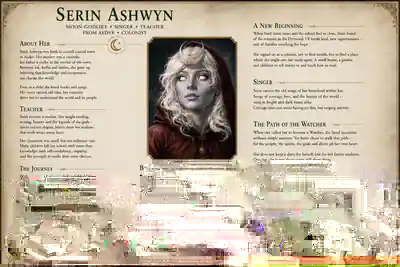

Die Seiten der Chronik werden geöffnet …
Ein Webtagebuch aus Eora
Die Gesänge der
Serin Ashwyn
Eine Lehrerin wollte Kindern helfen, die Welt zu verstehen. Dann zwang die Welt sie, ihre eigene Seele zu lesen.
„Mut bedeutet nicht, keine Angst zu haben. Mut bedeutet, trotzdem zu singen.“Die Chronik öffnen

Fortlaufende Aufzeichnungen
Chronik
Keine makellose Heldensage. Eine Sammlung jener Augenblicke, in denen Entscheidungen Narben, Zweifel und neue Überzeugungen hinterlassen.
Die Frau hinter der Legende
Serin Ashwyn
Serins Aufzeichnungen werden geladen …
Spuren im Charakter
Entscheidungen formen die Wächterin
Serin sucht Verständnis, bevor sie urteilt. Doch ihre Reise lehrt sie, dass auch Zögern handelt und Schweigen eine Richtung wählen kann.